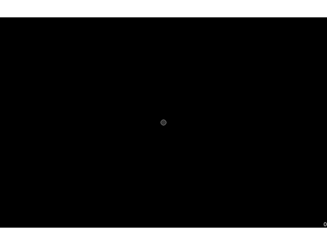

Note
Go to the end to download the full example code
Use joystick controls¶
This example demonstrates how to use a joystick as an input device using button presses and continuous analog movement to control the position of a circle on the screen.
exp_name: joyExp
date: 2023-01-09 16_43_27.491984
file: /home/circleci/project/examples/experiments/joystick_experiment.py
participant: foo
session: 001
2023-01-09 16:43:27,492 - INFO - Expyfun: Using version 2.0.0.dev0 (requested dev)
2023-01-09 16:43:27,492 - INFO - Expyfun: Setting up sound card using pyglet backend with 2 playback channels
2023-01-09 16:43:27,688 - WARNING - Expyfun: Mismatch between reported stim sample rate (24414) and device sample rate (44100.0). Experiment Controller will resample for you, but this takes a non-trivial amount of processing time and may compromise your experimental timing and/or cause artifacts.
2023-01-09 16:43:27,688 - INFO - Expyfun: Setting up screen
2023-01-09 16:43:27,729 - EXP - Expyfun: Set screen visibility True
2023-01-09 16:43:27,743 - INFO - Initialized [1400 900] window on screen XlibScreen(display=<pyglet.canvas.xlib.XlibDisplay object at 0x7fb586b8e860>, x=0, y=0, width=1400, height=900, xinerama=0) with DPI 69.73
2023-01-09 16:43:27,743 - INFO - Expyfun: Initializing dummy triggering mode
2023-01-09 16:43:27,744 - INFO - Expyfun: Initialization complete
2023-01-09 16:43:27,744 - EXP - Expyfun: Participant: foo
2023-01-09 16:43:27,744 - EXP - Expyfun: Session: 001
2023-01-09 16:43:27,825 - INFO - Expyfun: Exiting
2023-01-09 16:43:27,830 - EXP - Expyfun: Audio stopped and reset.
# Author: Eric Larson <larson.eric.d@gmail.com>
#
# License: BSD (3-clause)
from expyfun import ExperimentController, analyze, building_doc
from expyfun.visual import Circle, Text
print(__doc__)
joystick = not building_doc
move_rate = 0.05 # map -1<->1 stick range to something decent for 60Hz refresh
noise_thresh = 0.01 # permit slight miscalibration
# on a Logitech Cordless Rumblepad, the right stick is the analog one,
# and it has values stored in z and rz
joy_keys = ('z', 'rz')
with ExperimentController('joyExp', participant='foo', session='001',
output_dir=None, version='dev',
joystick=joystick) as ec:
circles = [Circle(ec, 0.5, units='deg',
fill_color=(1., 1., 1., 0.2), line_color='w')]
# We use normalized units for "pos" so we need to compensate in movement
# so that X/Y movement is even
ratios = [1., ec.window_size_pix[0] / float(ec.window_size_pix[1])]
pressed = ''
if not building_doc:
ec.listen_joystick_button_presses()
count = 0
screenshot = None
pos = [0., 0.]
while pressed != '2': # enable a clean quit (button number 3)
#######################################################################
# Draw things
Text(ec, str(count), pos=(1, -1),
anchor_x='right', anchor_y='bottom').draw()
for circle in circles[::-1]:
circle.draw()
screenshot = ec.screenshot() if screenshot is None else screenshot
ec.flip()
#######################################################################
# Get presses
if not building_doc:
pressed = ec.get_joystick_button_presses()
ec.listen_joystick_button_presses() # clear events
else:
pressed = [('2',)]
count += len(pressed)
#######################################################################
# Move the cursor
for idx, (key, ratio) in enumerate(zip(joy_keys, ratios)):
delta = 0. if building_doc else ec.get_joystick_value(key)
if abs(delta) > noise_thresh: # remove noise
pos[idx] = max(min(
pos[idx] + move_rate * ratio * delta, 1), -1)
circles[0].set_pos(pos, units='norm')
if pressed:
circles.insert(1, Circle(ec, 1, units='deg',
fill_color='r', line_color='w'))
circles[1].set_pos(pos, units='norm')
if len(circles) > 5:
circles.pop(-1)
pressed = pressed[0][0] # for exit condition
ec.check_force_quit()
analyze.plot_screen(screenshot)
Total running time of the script: ( 0 minutes 0.419 seconds)